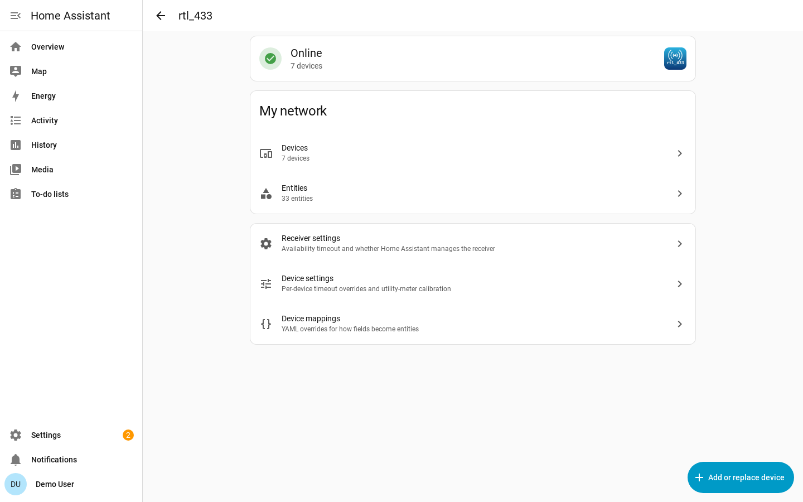

Adding Devices to Home Assistant¶
By default, rtl_433 listens for new devices but doesn't add them to Home Assistant. In a busy or dense area, you're likely to see far more sensors than you want to keep. You may also see devices that don't really exist, due to corrupt or weak decodes. Use this page to add the devices you want, and ignore those you don't.
Doorbells, remotes, and motion sensors only transmit when something happens, so trigger them once to make them show up.
The rtl_433 Page¶
Open Settings → Devices & Services → rtl_433 → Configure (the gear icon). This is the rtl_433 page, and it works like the Zigbee and Z-Wave pages: it opens on an overview of the receiver, with everything else one click away. It is available to administrators only.
The overview has three parts:
- a card at the top saying whether the receiver is Online, and how many devices you have added
- My network, with links to your rtl_433 devices and entities on the usual Home Assistant pages
- Receiver settings, Device settings and Device mappings, which each open their own page
and, bottom right, an Add or replace device button.

If you have more than one receiver, the top of the page covers all of them: the device count and both My network links include every rtl_433 device, whichever receiver sees it, and the card at the top says how many receivers are offline rather than Online when one of them is down.
Adding Devices¶
Click Add or replace device. Every device that has been seen is listed here, newest first. If you recently restarted Home Assistant and nothing has transmitted, this page may be empty until something transmits.

Each card shows the device type rtl_433 decoded, and the device key which includes any ID, channel, and subtype information.
| On the card | What it tells you |
|---|---|
| Sightings | How many times the device has transmitted since Home Assistant started. A real sensor keeps checking in; a bad decode is usually heard once. |
| Signal | The signal-to-noise ratio of the most recent message, or its RSSI when no SNR was reported. Only shown when the server reports levels; your own sensors are normally the strongest. |
| Last seen | How long ago the device last transmitted. Hover over it for the exact first and last times. |
| Readings | The most recent message, shown as the entities adding it would create. |
Readings that cannot be mapped to Home Assistant will not show here. See Device Library for information about adding support for new devices and fields.
Select an Area to assign the device there, or leave it blank if that doesn't make sense.
Click Add to create the device. The card stays where it is and turns green, with a link to the device that was just created.

Otherwise, Ignore hides the device.
Clearing the List¶
A receiver left running for a few weeks in a built-up area accumulates hundreds of devices, and the one you came to add is somewhere among them. Clear discovered devices will empty the list so you can easily add the ones you want.
Receiver and Device Settings¶
Receiver settings is the default availability timeout for every device on this receiver, and whether Home Assistant manages the server's own SDR settings — see Configuration.
Device settings targets one device you have already added: its availability timeout override, its motion clear delay, and its utility-meter calibration. Pick the device at the top and the rest of the form rebuilds from it, showing only the settings that device actually has.
Device mappings is this receiver's device-library overrides, as YAML. Clearing the editor removes them all. The device mappings are automatically validated (but not tested!) when saving.
Ignoring Devices¶
Sometimes devices are detected that you will never want to add to Home Assistant. Click Ignore on the card to hide it at the bottom of the list. If you made a mistake, go back to Add or replace device, click Show ignored devices under the cards, and then Un-ignore:

The device reappears the next time it transmits, which for a door or motion sensor means the next time it is triggered.
Deleting Devices¶
To remove a device you no longer want, open it under Settings → Devices & Services → rtl_433 → the device → Delete.
Deleting removes the device and its entities from Home Assistant, but it does not stop the transmitter. The device returns to the discovered list the next time it transmits, so you can add it back. To keep it out of the list, ignore it instead.